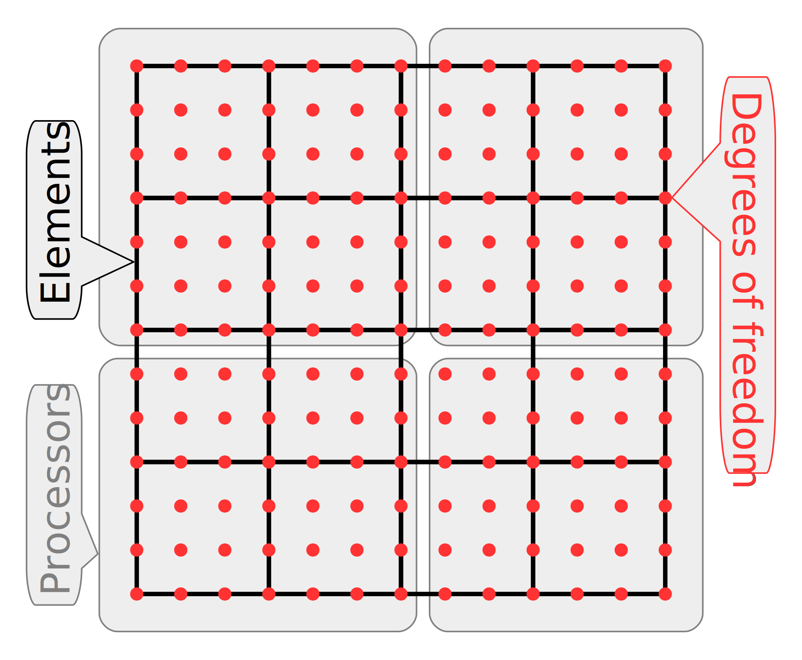
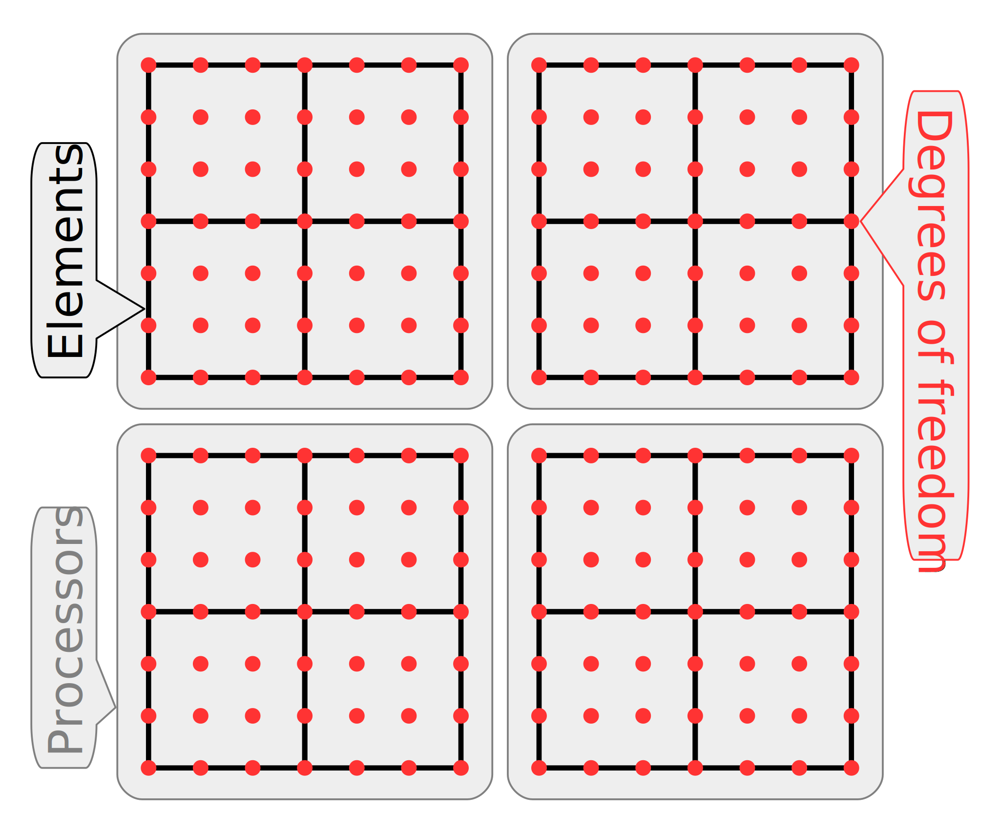
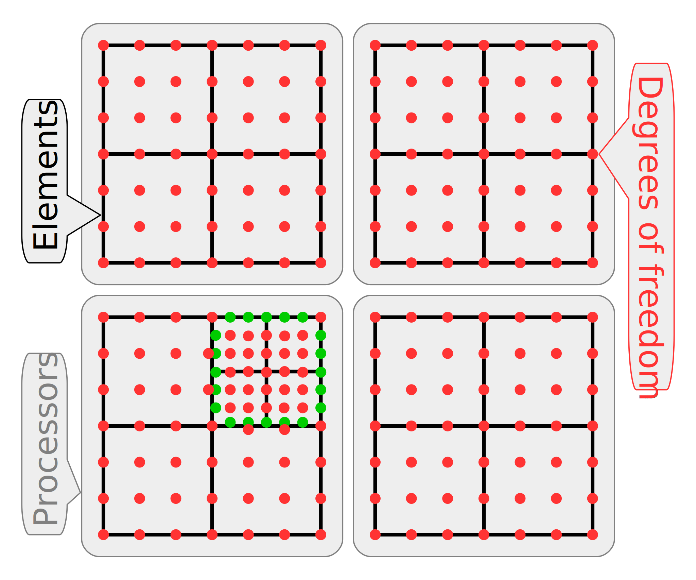

CEED Bake-off Problems (Benchmarks)
This page contains the specifications of CEED's bake-off problems: high-order kernels/benchmarks designed to test and compare the performance of high-order codes.
Short Summary
This section is a just a quick reference using the notation from the Terminology and Notation section below (cf. libCEED documentation).
For more details and software, see the follow-on sections.
Bake-off Problems (BPs)
- BP1: scalar PCG with mass matrix, $q = p+2$
- BP2: vector PCG with mass matrix, $q = p+2$
- BP3: scalar PCG with stiffness matrix, $q = p+2$
- BP4: vector PCG with stiffness matrix, $q = p+2$
- BP5: scalar PCG with stiffness matrix, $q = p+1$
- BP6: vector PCG with stiffness matrix, $q = p+1$
These are all T-vector-to-T-vector and include parallel scatter + element scatter + element evaluation kernel + element gather + parallel gather.
The boundary conditions for BP1 and BP2 are homogeneous Neumann. For the rest of the BPs the boundary conditions are homogeneous Dirichlet.
The nodal points, denoted by $p$, are GLL (Gauss-Legendre-Lobatto), while the quadrature points, denoted by $q$, are GL (Gauss-Legendre) for BP1-BP4 and GLL for BP5-BP6.
Bake-off Kernels (BKs)
- BK1: scalar E-vector-to-E-vector evaluation of mass matrix, $q = p+2$
- BK2: vector E-vector-to-E-vector evaluation of mass matrix, $q = p+2$
- BK3: scalar E-vector-to-E-vector evaluation of stiffness matrix, $q = p+2$
- BK4: vector E-vector-to-E-vector evaluation of stiffness matrix, $q = p+2$
- BK5: scalar E-vector-to-E-vector evaluation of stiffness matrix, $q = p+1$
- BK6: vector E-vector-to-E-vector evaluation of stiffness matrix, $q = p+1$
The BKs are parallel to the BPs, except they do not include parallel and element scatter/gather (the actions of P and G and their transposes).
CEED Benchmarks Repository
The CEED benchmarks repository is available at
https://github.com/CEED/benchmarks
and contains implementations for the CEED bake-off problems with MFEM and
Nek5000 in the directories tests/mfem_bps and tests/nek5000_bps,
respectively. See the included README.md files for more details.
VT CEED BP Software Release
Checkout the new CEED BP Software Release by the Virginia Tech CEED team. Its main focus is on GPU performance with kernels written in the OCCA framework.
Bake-off Problems Description
Bake-off Problems. We define our first four bake-off problems, denoted as BP1, BP2, BP3, and BP4.
- BP1 Solve $B {\underline u} = {\underline f}$, where $B$ is the mass matrix.
- BP2 Solve the (block-diagonal) vector system, $B {\underline u}_i = {\underline f}_i$ ($i=1,2,3$) where $B$ is as prescribed in BP1.
- BP3 Solve $A {\underline u} = {\underline f}$, where $A$ is the Poisson operator.
- BP4 Solve the (block-diagonal) vector system, $A {\underline u}_i = {\underline f}_i$ ($i=1,2,3$) where $A$ is as prescribed in BP3.
Bake-off Problem Details. The following items describe the details common to all BPs:
- Mesh: use a 3D box mesh with hexahedral elements.
- Boundary conditions (BCs): either no essential BCs, or essential BCs on the whole boundary.
- Solution space orders: $p=1,2,3,\ldots,8$, and optionally higher $p$.
- Quadrature: tensor product Gauss-Legendre (GL) with $q=p+2$ points in each spatial dimension; the quadrature order is $2q-1=2p+3$.
- The cases of $q=2$, for $p=1$, and $q=3$, for $p=2$, are of interest as they provide a more favorable ratio of the total number of quadrature points to the total number of unknowns. Note that this ratio is smaller (and therefore, advantageous in terms of work per unknown) for larger $p$.
- Use nodal basis with $p+1$ Gauss-Legendre-Lobatto (GLL) points in each spatial dimension.
- Consider mesh orders of $p_{\rm mesh}=1$, and/or $p_{\rm mesh}=p$.
- Elements are assumed to be deformed, meaning that the local element-by-element evaluation cannot exploit simplifications arising from the absence of cross-terms in the Laplacian, etc.
- Use the QA/PA operator representation, see Terminology and Notation.
- Meshes: consider meshes with $E=2^s$ elements with $s\in\mathbb{N}$; for a given $s$, use a 3D Cartesian mesh with $2^{s_1}\times 2^{s_2}\times 2^{s_3}$ elements ($s_i\in\mathbb{N}$), where $\{s_i\}$ are uniquely determined by the conditions: $s_1+s_2+s_3 = s$ and $\lfloor s/3\rfloor+1\ge s_1 \ge s_2 \ge s_3 \ge \lfloor s/3\rfloor$.
- For example:
- if $s=15$, then $s_1=s_2=s_3=5$
- if $s=16$, then $s_1=6$ and $s_2=s_3=5$
- if $s=17$, then $s_1=s_2=6$ and $s_3=5$
- Consider tests with $2^t$ processors, $0\le t\le s$, and partition the mesh into $2^{t_1}\times 2^{t_2}\times 2^{t_3}$ uniform parts, where $\{t_i\}$ are derived from $t$ the same way $\{s_i\}$ are derived from $s$. Using a partitioning of this type allows us to consider cases with a small number of elements per MPI rank - down to one element/rank.
- Alternative mesh partitioning algorithms are also acceptable.
- Consider runs with "large" number of processors and vary the number of mesh elements per MPI rank starting from 1 and gradually increasing to a number where performance saturation is observed. This suite of benchmarks thus captures both the strong-scale and weak-scale performance limits under the assumption that the underlying code is scalable.
- Use the conjugate gradients (CG) iterative method to solve the linear system. Since we are interested in evaluating the performance of the QA/PA operator representation (see Terminology and Notation), we assume no preconditioning, or simple diagonal preconditioning.
Required output:
- Total number of MPI ranks and number of MPI ranks per compute node.
- Number of mesh elements, $E$.
- Polynomial degree, $p$.
- Total number of degrees of freedom, $n_T$ (size of a T-vector), or approximately $n:=E p^3$.
- Time per iteration = total CG time $/$ number of CG iterations.
- Time is measured as maximum over all MPI ranks; using
MPI_Wtime()or other similar function. - [optional] Number of iterations to reach relative residual reduction of $10^{-6}$.
- [optional] Time for quadrature-point/partial assembly.
Terminology and Notation
Vector representation/storage categories:
- True degrees of freedom/unknowns, T-vector:
- each unknown $i$ has exactly one copy, on exactly one processor, $rank(i)$
- this is a non-overlapping vector decomposition
- usually includes any essential (fixed) dofs. 
- Local (w.r.t. processors) degrees of freedom/unknowns, L-vector:
- each unknown $i$ has exactly one copy on each processor that owns an element containing $i$
- this is an overlapping vector decomposition with overlaps only across different processors - there is no duplication of unknowns on a single processor
- the shared dofs/unknowns are the overlapping dofs, i.e. the ones that have more than one copy, on different processors. 
- Per element decomposition, E-vector:
- each unknown $i$ has as many copies as the number of elements that contain $i$
- usually, the copies of the unknowns are grouped by the element they belong to.
- In the case of AMR with hanging nodes (giving rise to hanging dofs):
- the L-vector is enhanced with the hanging/dependent dofs
- the additional hanging/dependent dofs are duplicated when they are shared by multiple processors
- this way, an E-vector can be derived from an L-vector without any communications and without additional computations to derive the dependend dofs
- in other words, an entry in an E-vector is obtained by copying an entry from the corresponding L-vector, optionally switching the sign of the entry (for $H(\mathrm{div})$- and $H(\mathrm{curl})$-conforming spaces). 
- In the case of variable order spaces:
- the dependent dofs (usually on the higher-order side of a face/edge) can be treated just like the hanging/dependent dofs case.
- Quadrature point vector, Q-vector:
- this is similar to E-vector where instead of dofs, the vector represents values at qudrature points, grouped by element.
- In many cases it is useful to distinguish two types of vectors:
- X-vector, or primal X-vector, and X'-vector, or dual X-vector
- here X can be any of the T, L, E, or Q categories
- for example, the mass matrix operator maps a T-vector to a T'-vector
- the solutions vector is a T-vector, and the RHS vector is a T'-vector
- using the parallel prolongation operator, one can map the solution T-vector to a solution L-vector, etc.
Operator representation/storage/action categories:
- Full true-dof parallel assembly, TA, or A:
- ParCSR or similar format
- the T in TA indicates that the data format represents an operator from a T-vector to a T'-vector.
- Full local assembly, LA:
- CSR matrix on each rank
- the parallel prolongation operator, $P$, (and its transpose) should use optimized matrix-free action
- note that $P$ is the operator mapping T-vectors to L-vectors.
- Element matrix assembly, EA:
- each element matrix is stored as a dense matrix
- optimized element and parallel prolongation operators
- note that the element prolongation operator is the mapping from an L-vector to an E-vector.
- Quadrature-point/partial assembly, QA or PA:
- precompute and store $w\det(J)$, or $\det(J)$ (in the case of mass matrix) at all quadrature points in all mesh elements
- the stored data can be viewed as a Q-vector.
- Unassembled option, UA or U:
- no assembly step
- the action uses directly the mesh node coordinates, and assumes specific form of the coefficient, e.g. constant, piecewise-constant, or given as a Q-vector (Q-coefficient).
Notes and Remarks
- What are good partitioning algorithms for the strong scaling limit? The problem is to generate well balanced partitions when the ratio "number of elements" $/$ "number of processors" is small. METIS 4 does not do well on this type of problems. What about METIS 5 and other graph partitioners? Maybe we need to develop specialized algorithms?